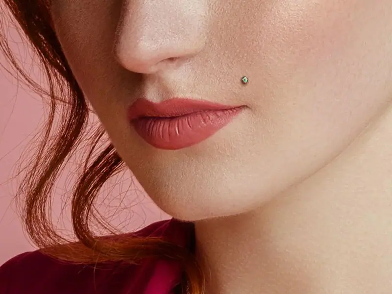
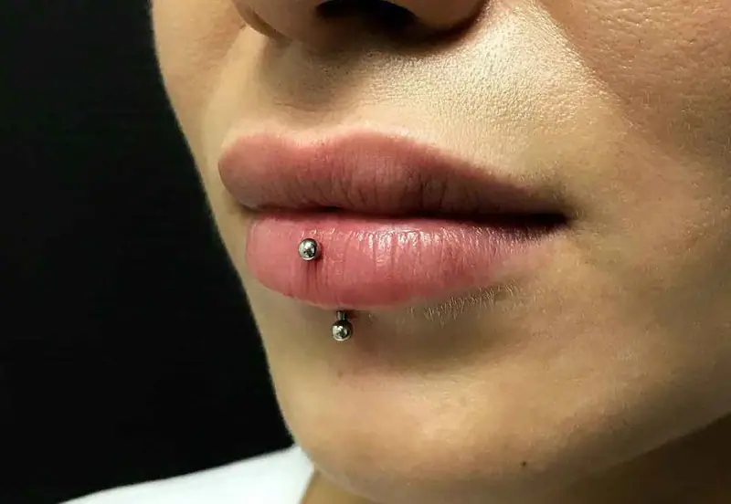
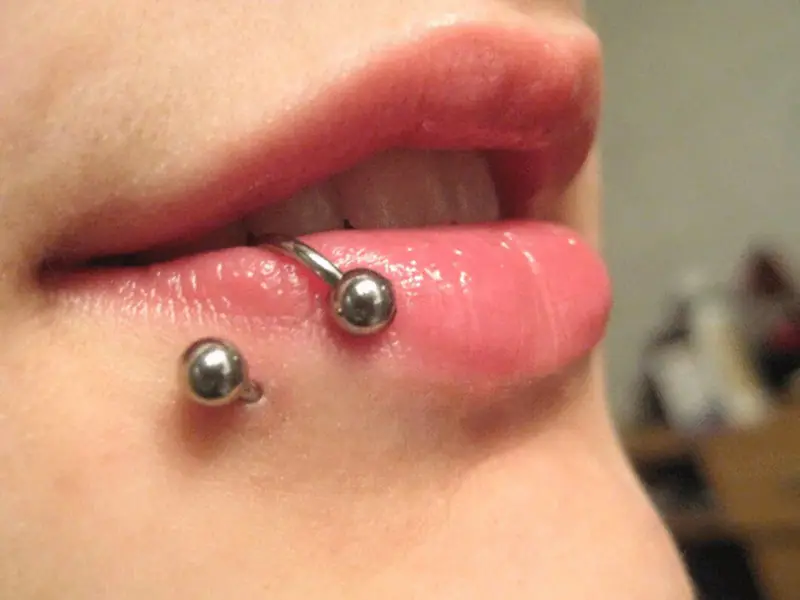
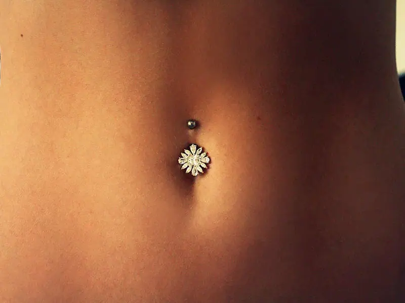

Küçük bir ışıltı, büyük bir ifade.
Kulaktan buruna, steril koşullarda ve doğru yerleşimle uygulanan piercingler.



Piercing, tarzını en ince detayda anlatmanın yolu. Doğru yerleşim ve doğru takı, farkı yaratır.
Uygulamadan önce yüz ve kulak yapına en uygun noktayı birlikte belirliyor, takı seçeneklerini gösteriyoruz. Her adımda ne yapacağımızı anlatıyor, soru işareti bırakmıyoruz.
Tüm uygulamalar steril ekipmanla ve hijyen standartlarına uygun şekilde yapılır; iyileşme sürecinde de yanındayız.
Seçenekler
Lob, helix, tragus, conch ve kombin kulak tasarımları.
Nostril ve septum uygulamaları.
Labret ve medusa gibi dudak çevresi piercingler.
Klasik göbek piercingi, zarif takı seçenekleriyle.
Karakterli ve cesur bir detay.
Piercing çalışmaları

Sonrası da önemli.
Detaylı bakım talimatlarını uygulama sonrasında sana ayrıca anlatıyoruz.
- Bölgeyi günde birkaç kez steril serum fizyolojik ile temizle.
- Takıyı çevirme, oynatma; kirli elle dokunma.
- İyileşme süresince takıyı değiştirme ya da çıkarma.
- Havuz, deniz ve saunadan iyileşene kadar uzak dur.
- Kızarıklık veya akıntı uzun sürerse bizimle iletişime geç.
Piercing acıtır mı?
Çoğu uygulama saniyeler süren kısa bir his bırakır. Bölgeye göre değişmekle birlikte işlem oldukça hızlıdır.
İyileşme ne kadar sürer?
Bölgeye göre birkaç haftadan birkaç aya kadar değişir. Kıkırdak bölgeler (helix, tragus gibi) genellikle daha uzun sürer.
Takımı kendim seçebilir miyim?
Evet, stüdyodaki seçenekler arasından yerleşime ve tarzına uygun takıyı birlikte seçiyoruz.
Yerini ayırt.
Formu doldur, talebin WhatsApp üzerinden bize ulaşsın. Uygunluğu kontrol edip en kısa sürede dönüş yapalım.